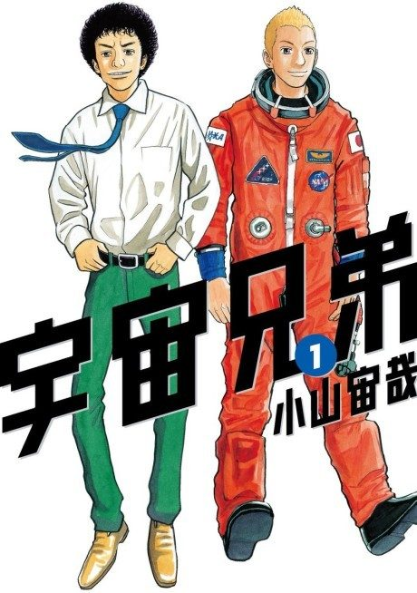

Anime
Anime
MangaSpace Brothers
宇宙兄弟
The anime takes the story to Unclear.
8.3AniList
—Animeter
99 epEpisodes
Anime finished. Where does the manga pick up?
StatusNo source yet
We looked for where the anime ends in the manga but found no source we trust yet. The manga is 432 chapters, finished.